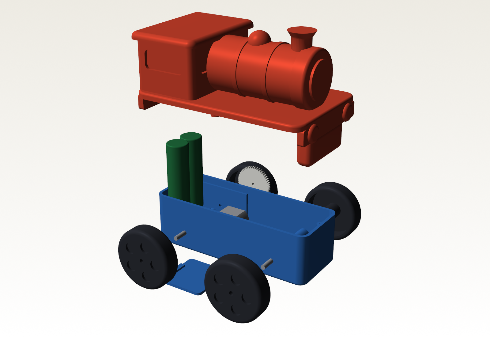
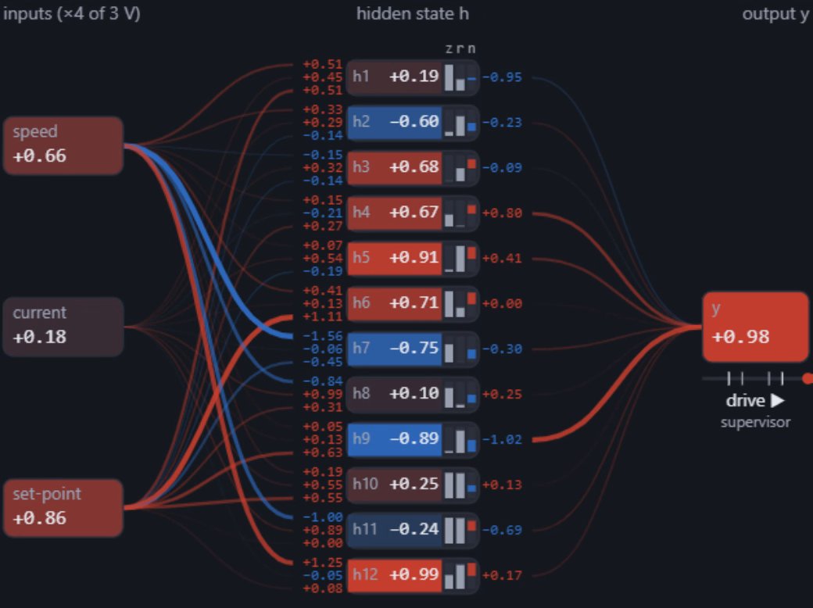
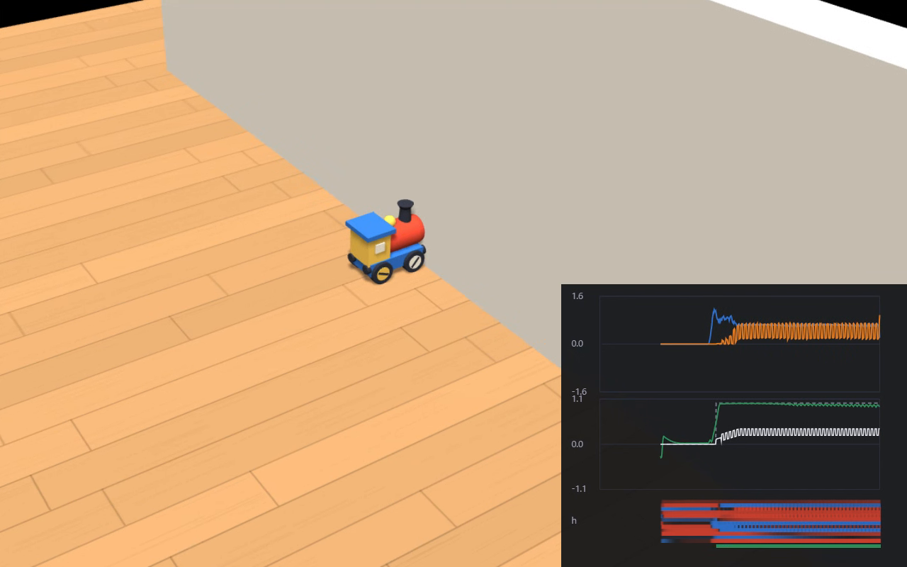
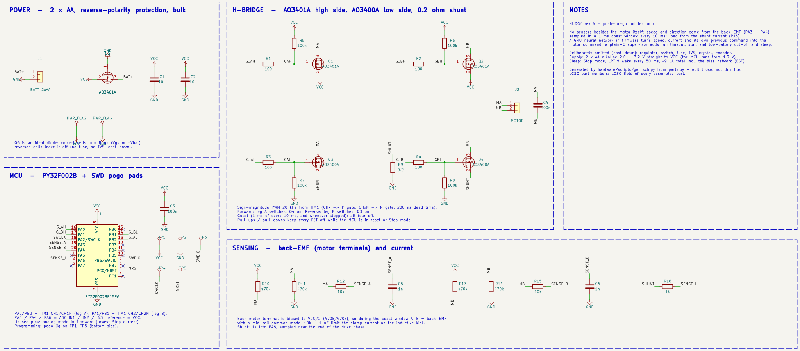
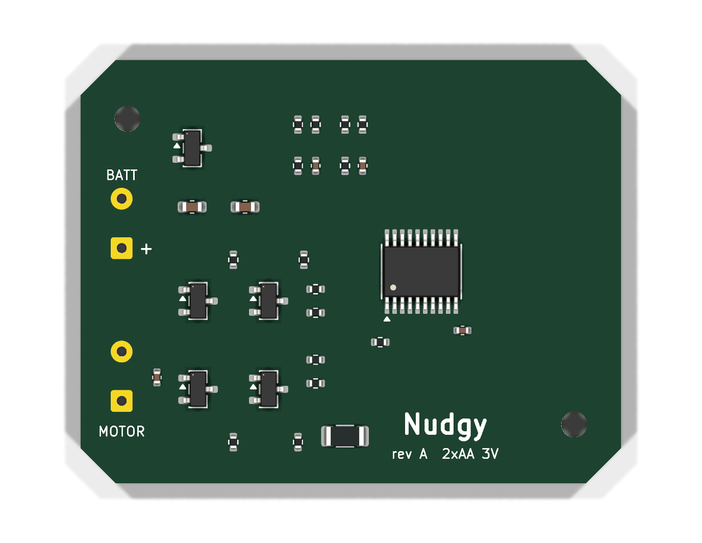
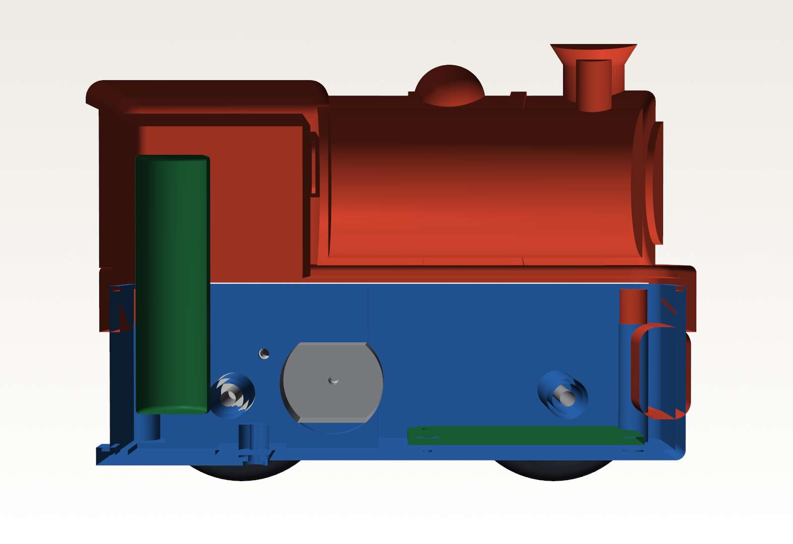

KTE · Projekt 2
Nudgy
Lokomotiva pro děti od jednoho roku, která cítí vlastní motor. Bez tlačítek a bez senzorů.
Bc. Marek Mach · říjen 2026

KTE · Projekt 2
Lokomotiva pro děti od jednoho roku, která cítí vlastní motor. Bez tlačítek a bez senzorů.
Bc. Marek Mach · říjen 2026
120 × 70 × 86
mm, 240 g s bateriemi
0
tlačítek a vypínačů

Rychlost z back-EMF motoru
1 ms bez buzení každých 10 ms, bez enkodéru
Proud přes bočník 0,2 Ω
náraz: rychlost padá, proud roste
Síť GRU, 12 jednotek, int8
723 B, výstup = povel jeď / stůj
Dozor v C jen vypíná
měkký rozjezd, limit 20 s, spánek, proud


0,12 s
medián zastavení po nárazu
24 / 27
testovacích scénářů (int8)
1,1 %
nepoznaných strčení
Učení: DAgger podle „učitele", který vidí skutečné síly
0,11 $
Puya PY32F002B, Cortex-M0+ 24 MHz
19 % flash
4 556 B z 24 KB, síť s tabulkami 2 264 B
11 % RAM
344 B z 3 KB včetně zásobníku
0,25 ms
výpočet za 10 ms cyklus, bez floatů (odhad)
Zkušební překlad celé logiky, ne finální firmware. Bitově shodný se simulátorem: 28 600 cyklů, 0 rozdílů.

28 součástek, 4 bloky
2 × AA přímo na MCU, bez stabilizátoru
Q5 = P-MOSFET jako ideální dioda proti přepólování: úbytek ≈ 4 mV
4 výstupy PWM 20 kHz na hradla
3 analogové vstupy: svorky motoru A, B a bočník
programování přes plošky na spodní straně
2 × AO3401A nahoře, 2 × AO3400A dole
R9 0,2 Ω pod můstkem měří proud
pull-upy drží tranzistory vypnuté v resetu
každá svorka motoru na VCC/2 přes 470k/470k
bez buzení je rozdíl A − B napětí motoru = rychlost
10k + 1 nF chrání vstup ADC

46 × 36 mm · 2 vrstvy · osazení z jedné strany
| Součástky | Ks | Cena / ks |
|---|---|---|
| MCU PY32F002B | 1 | 0,108 $ |
| MOSFETy AO3401A / AO3400A | 5 | 0,305 $ |
| Bočník 0,2 Ω 1206 | 1 | 0,012 $ |
| Odpory a kondenzátory | 21 | 0,084 $ |
| Celkem, 12 položek | 28 | 0,509 $ |
Ceny LCSC 2026-10-07 při 1 000 ks. Jen 2 díly „extended" u JLCPCB.

Motor FA-130, převod 1 : 20
Kola z TPE, Ø 40 mm
60–90 mA
při jízdě, 0,2–0,27 W
9,3 µA
ve spánku
≈ 150 dní
na 2 × AA při 30 min hraní denně (odhad)
| Série | 100 ks | 1 000 ks | 10 000 ks |
|---|---|---|---|
| Náklady v ČR za kus | 14,71 € | 11,43 € | 3,80 € |
| Z toho formy na plast | – | 7,92 € | 1,76 € |
V obchodě
24,90 €
Vlastní e-shop
22,90 €
Bod zvratu
≈ 2 450 ks
Konkurence: VTech Press & Go ≈ 12 €, Fisher-Price lezoucí hračka ≈ 40 €
Simulátor se připojuje…
Na tomto PC spusť start-simulator.bat (simulátor běží na http://localhost:8765/simulator/index.html).
Živý pohled se připojuje…
Na tomto PC spusť start-quest.bat a jednou otevři https://localhost:8443/mr/view.html (potvrď certifikát).
0,51 $ elektroniky · 28 součástek · síť 723 B
3,80 € při 10 000 ks · 24,90 € v obchodě
Ověřeno v simulátoru. Další krok: prototyp a měření na skutečném motoru.